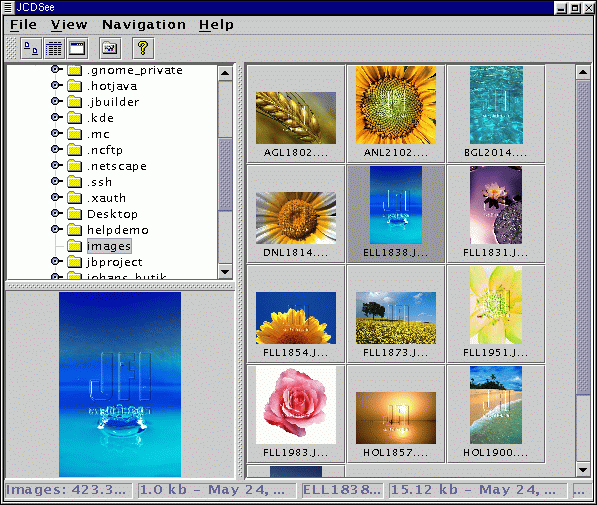

JCDSee Help - Main Window |
|
JCDSee's main window looks like this:

From here you can go everywhere else in the program by either choosing an option in the main menu, click on an icon in the toolbar, or press a accelerator key.
Folder browser
To view all images in a folder, use the folder browser in the top left
corner and select the foler to view. All image files will be listed in
the area to the right, either as thumbnails if you are in thumbnail view
or in a list if you are using the list view mode.
Views
To change view modes simply select the mode under View in the main
window or click on the corresponding icon in the toolbar. There a three
views: thumbnail view, list view and fullscreen view. For more infromation,
see section about views.
Status bar
Status about the currently selected folder and image is displayed in
the status bar at the bottom of the screen. Here you can view folder size,
image size and name, image dimensions etc.
Preview
When selecting an image it will be displayed in the preview panel in
the bottom left corner of the screen. You can change the size of this panel
by moving the slides.